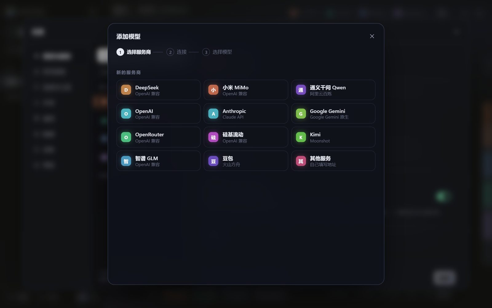
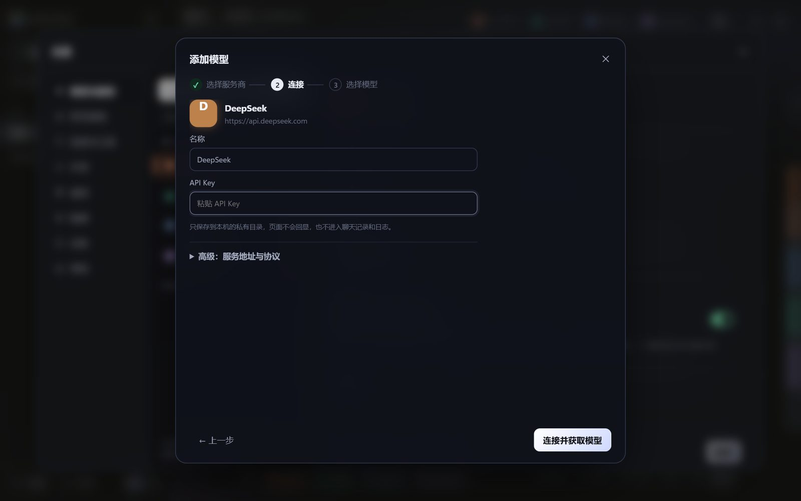
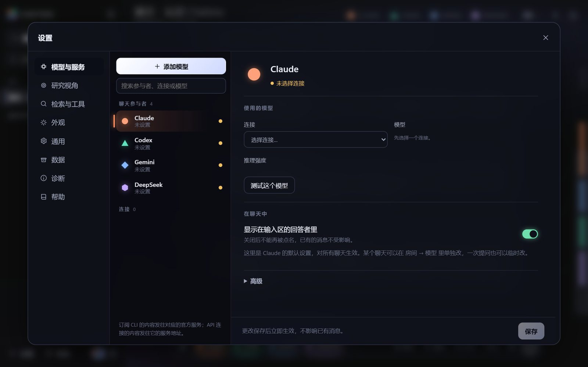
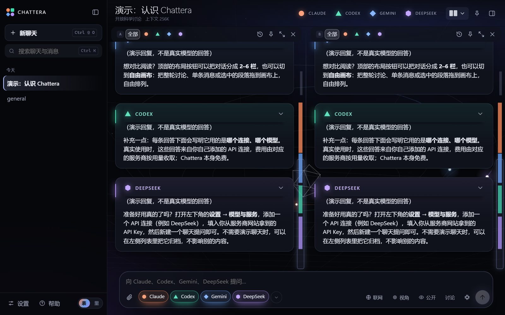
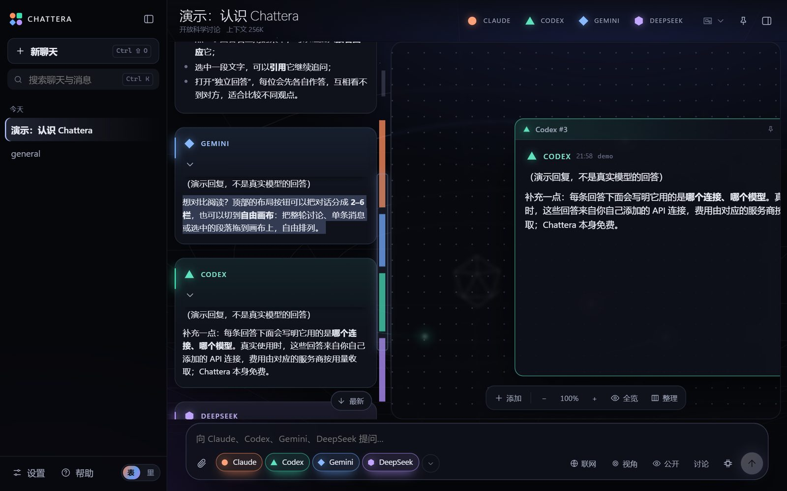
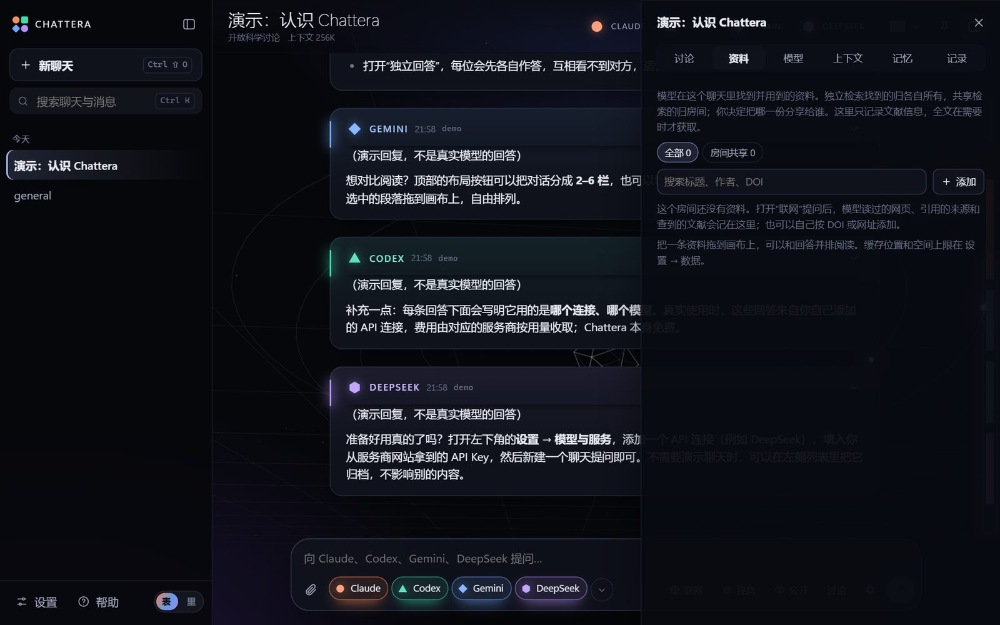
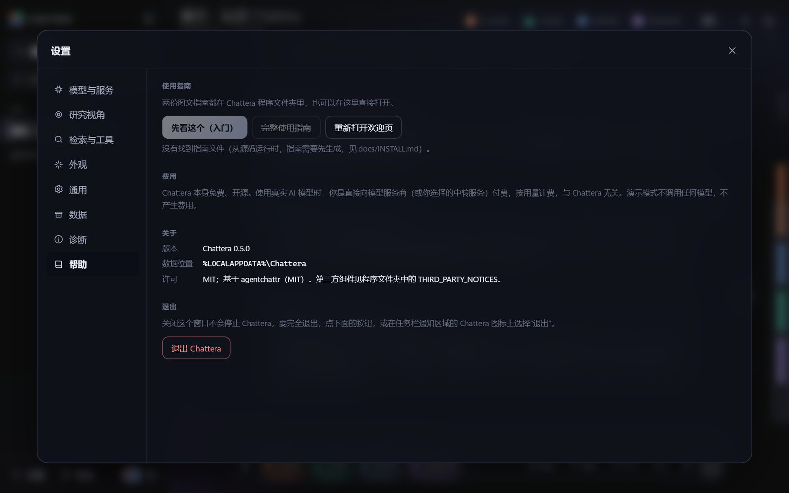

适用于 Windows 便携版。第一次使用请先看《01_先看这个.pdf》。
Chattera 是一个在你自己电脑上运行的群聊：你提问，几位 AI 模型各自回答；你可以只问其中一位，也可以让它们互相回应、 比较彼此的观点。它是聊天工具，不是“自动办事”的软件：AI 只回答问题，不会在你的电脑上执行命令或改动文件。
| 术语 | 意思 |
|---|---|
| 参与者 | 聊天里的一位“发言者”，例如 Claude、Codex、Gemini、DeepSeek，或你自己添加的模型。 |
| 连接（服务商） | Chattera 联系某家 AI 公司的方式，通常是“服务地址 + API Key”。 |
| 模型 | 同一家服务商通常提供好几个模型（能力、速度、价格不同）。每位参与者使用其中一个。 |
| API Key | 服务商发给你的“通行密码”，用来证明是你在使用并据此计费。请像密码一样保管。 |
Chattera-Windows-x64.zip → 全部解压缩…。放在“文档”或桌面都可以，也可以放在 U 盘里。Chattera.exe。第一次启动约十几秒；之后 Chattera 会在自己的窗口中打开
（电脑装有 Microsoft Edge 时使用 Edge 的应用窗口，否则用默认浏览器）。platform.deepseek.com）、OpenAI、Anthropic、Google Gemini、通义千问、Kimi、智谱 GLM 等。

在 设置 → 模型与服务 的左侧列表里点一位参与者，可以更换它使用的连接和模型、调整推理强度，点 测试这个模型 会发一条极短的消息确认能用（会产生极少量费用）。

点输入区的 联网，默认是 独立检索：每个模型用它所在服务商的官方搜索（没有的话由 Chattera 代为检索）， 自己决定搜什么、读什么。另外两种：
每条回答下方都能展开看到它实际搜了什么、读了哪些网页；没有真正检索到的来源不会被当作引用。
点顶部右侧的布局按钮，可以选择 1–6 栏（4 栏为 2+2，5 栏为 3+2，6 栏为 3+3），也可以按 Ctrl + 1…6。 每一栏可以单独滚动、只看某一位参与者、放大或固定位置。

选择 自由画布 后，聊天停靠在左侧，右侧是一块可以拖动、缩放的画布：

点右上角的房间面板按钮，选 资料。这里列出这个聊天里模型实际用到的论文和网页：读过的、引用过的、明确保存的。 你也可以手动添加 DOI 或网址。
面板里的 模型 页可以单独设置这个聊天里每位参与者用哪个模型。

你的聊天、设置、API Key、资料库和日志都只保存在这台电脑上，默认位置是 %LOCALAPPDATA%\Chattera （把这串字符粘贴到文件资源管理器的地址栏，按回车即可打开）。也可以在通知区域图标的右键菜单里点 打开数据文件夹。
Chattera 数据文件夹复制到别处。Chattera.exe 旁边新建一个名为 portable.txt 的空文件，之后数据都保存在程序旁边的 data 文件夹里。| 现象 | 怎么办 |
|---|---|
| 双击后启动窗口显示错误 | 点 打开日志，查看 server.log 最后几行；或点 重试。确认压缩包已完整解压（不要在压缩包里直接运行）。 |
| 窗口关了，再次双击没反应 | Chattera 仍在后台运行，双击会重新打开窗口；也可点通知区域图标。 |
| “服务商拒绝了这个密钥” | Key 复制不完整、已删除或账户余额为零。到服务商网站检查后，在 设置 → 模型与服务 → 该连接 中重新填写。 |
| 回答一直不出现 / 超时 | 可能是网络或服务商繁忙。点回答旁的停止后重试；在 设置 → 诊断 查看各连接的最近失败原因。 |
| 某位参与者是灰色的 | 它还没有可用的连接。在 设置 → 模型与服务 中为它选择连接和模型，或在输入区不选它。 |
| 提示端口被占用 | Chattera 会自动换一个空闲端口，一般无需处理。 |
| 扫描版 PDF 读不出文字 | 便携版已内置文字识别（OCR），扫描件在本机自动识别，不会上传到别处。附件预览里这些页面标着“OCR 识别”，可能有错字，公式和表格尤其不可靠，关键内容请对照页面图片。每份文件最多识别 40 页，时间不够时会列出没识别的页。 |
| 界面上的 Claude Code / Codex 是什么 | 它们是可选的“本机订阅 CLI”连接，面向开发者，默认关闭。普通用户使用 API 连接即可，不需要它们。 |
| 想彻底卸载 | 退出后删除程序文件夹；如不再需要聊天记录，再删除 %LOCALAPPDATA%\Chattera。 |
左下角的 帮助 里可以打开这两份指南、重新打开欢迎页、查看版本和数据位置，以及退出 Chattera。
Chattera 使用 MIT 许可，基于开源项目 agentchattr。程序文件夹中的 THIRD_PARTY_NOTICES.txt 和
licenses 文件夹列出了它包含的第三方组件及其许可。
本指南的截图来自 Chattera Windows 便携版的演示模式，未包含任何真实 API Key 或私人聊天内容。
